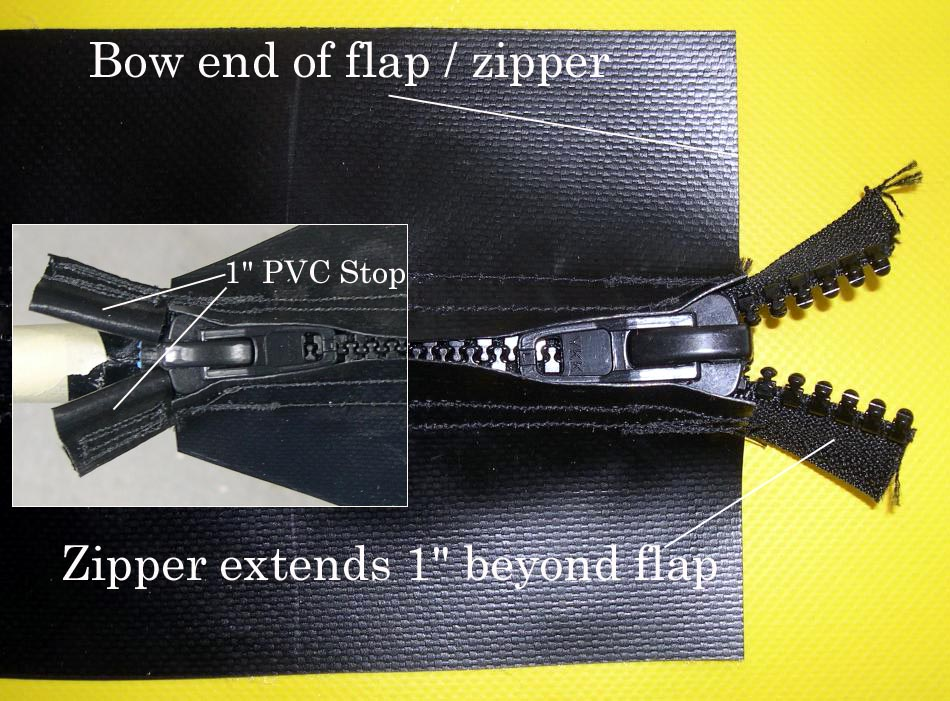

| Zipper to Stem Attachment ( 3 of 11 ) | Menu Last Page Next Page |
|

Zipper Details - The zipper extends 1" past the end the 5" wide PVC flap. The 1" section of zipper is covered with 1" sections of sewn PVC that serve as the zipper "stops". The original plastic "stops" were removed when the zipper was shortened to the desired length. The bow end of the zipper / flap is glued to the deck skin where it intersects the hull skin. In this photo, the glossy side of the zipper is showing, and the flap has been cut open to display the zipper. This cut is normally make after the PVC flap is glued to the deck. Note the double rows of stitching on each side of the zipper.
|
|